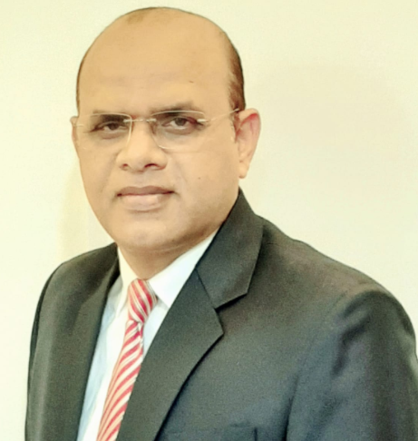

R
ajesh Singh
VP & Head-Sales & Business Development in Bank Of India.
VP & Head-Sales & Business Development in Bank Of India.
"Keep on going, and the chances are that you will stumble on something, perhaps when you are least expecting it. I never heard of anyone ever stumbling on something sitting down."
Febuary 2019 - Present
Strategy to set up an effective business model and grow geographically, finding product gaps & launching new products to cover baskets of domain, maintaining cost and generating business with profits, generating revenue sales and improve profits.
August 2012 – Febuary 2019
Strategy to set up institutional sales/business, product positioning and launch new products, put team in place, pricing and tie-up with channel partners, Acquisition of new customer/investors.
December 2010 – August 2012
Strategy to achieve market share with top 50 clients, focus to strengthen relations with key partners/investors, pricing for key partners & training activities for sales team, presentation to Board, product designing & positioning.
December 2007 – November 2010
Improving the Banking Channel Business, Team set-up, due to diligence process interactions with banks product/research team, negotiation of commercials to promote products, product training, AMFI training program to PSU & Co-operative banks/RM, Product positioning to achieve numbers.
June 2006 – November 2007
Strengthening the relationship with Institutional investor’s, improve the corporate & institutional business, product innovation for the corporate & institutional investors, presentation for PMS, business development, ensure predefined practices in sales and service, resulting in complete satisfaction.
December 2005 – May 2006
Identify and develop market thrust areas and undertaking promotional activities, develop & appoint Dos, empanelment of IFA, distributors & channel partners, responsibility of productivity levels & service levels of channels, ensure predefined practices in sales & service, responsibility of overall control function of branch
April 2004 - November 2005
Identify and develop market thrust areas and undertaking promotional activities, set up branches (ISD) in Nagpur & Nashik, corporate presentation, responsible for productivity levels & service levels of channels, training programs for IFA, SBI branches & distributors, responsibility of the overall control function of the branch.
December 2001 – April 2004
Set-up Goa operations, corporate presentation, business development, responsibility of productivity levels, overall control function of branch, bank reconciliation & MIS reports.
December 1999 - December 2001
Financial Planning / advisory services, promotion of equity, mutual fund, fixed deposits, bonds, IPO’s depository service & insurance products through HNI, corporate, Trusts, sub-brokers, channel partners, institutions & NRI, conduct product promotion activities for associations and channel partners in the region, arrangement of IPO’s financing through banks & NBFC’s, preparation of MIS reports
January 1998 - December 1999
Develop liaison with corporate, HNI, travel agents, hotels, banks, customers and R.B.I and FFMC, promotion of Western Union Financial Services, prepare M.I.S report of the Mumbai branch for submission to H.O, recoveries of banks, negotiation with banks, travel agents and FFMC for pickup and offloading the various currencies.
“Your work is going to fill a large part of your life, and the only way to be truly satisfied is to do what you believe is great work. And the only way to do great work is to love what you do.”

Co-founder, Chairman and CEO of Apple Inc.
“Would you like me to give you a formula for success? It’s quite simple, really: Double your rate of failure. You are thinking of failure as the enemy of success. But it isn’t at all. You can be discouraged by failure or you can learn from it, so go ahead and make mistakes. Make all you can. Because remember that’s where you will find success.”
2nd President of IBM, political figure, and Philanthropist
“Don’t take too much advice. Most people who have a lot of advice to give — with a few exceptions — generalize whatever they did. Don’t over-analyze everything. I myself have been guilty of over-thinking problems. Just build things and find out if they work.”
Founder of Pinterest
“The first rule of any technology used in a business is that automation applied to an efficient operation will magnify the efficiency. The second is that automation applied to an inefficient operation will magnify the inefficiency.”
Co-founder of Microsoft
“People who succeed have momentum. The more they succeed, the more they want to succeed, and the more they find a way to succeed. Similarly, when someone is failing, the tendency is to get on a downward spiral that can even become a self-fulfilling prophecy.”
Life and Business strategist, and Author
“Character cannot be developed in ease and quiet. Only through experience of trial and suffering can the soul be strengthened, ambition inspired, and success achieved.”
American author, political activist and lecturer